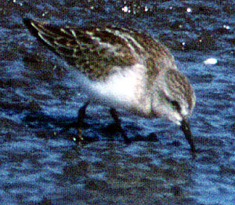

| These photographs accompany records that have been recently submitted to the committee. This record
was NOT ACCEPTED. Little Stint Calidris minuta 17 Sept 1992, Eureka Sewer Ponds, HUM 1993-050A © 1992 Ron LeValley  Little Stint Calidris minuta 17 Sept 1992, Eureka Sewer Ponds, HUM 1993-050A © 1992 Ron LeValley Back to CBRC Rare Bird Photos |